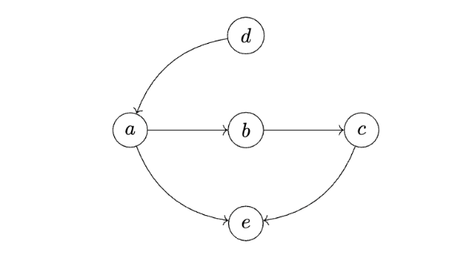
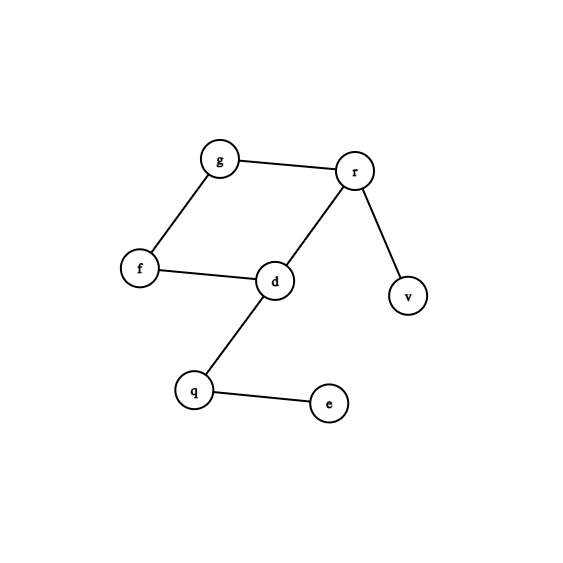
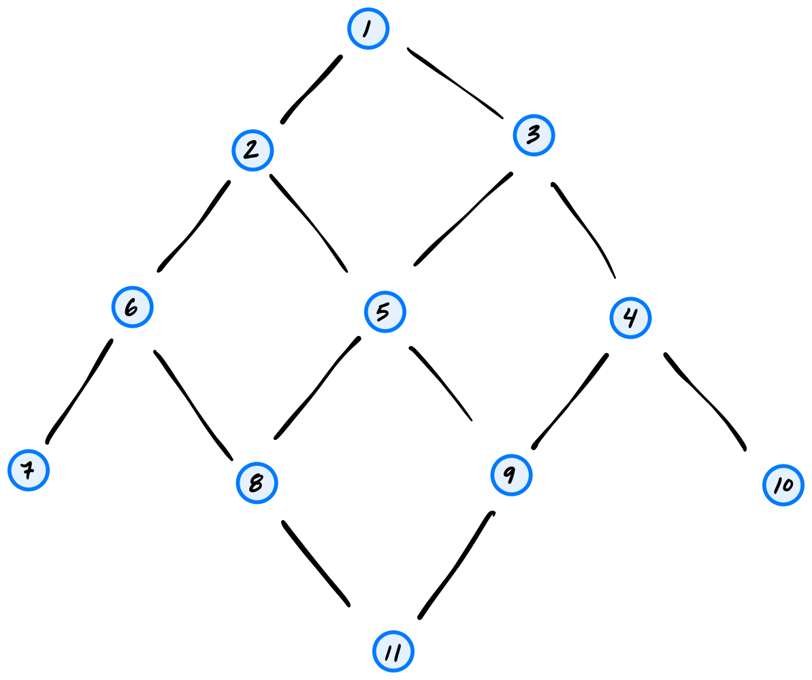
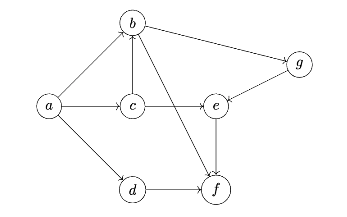
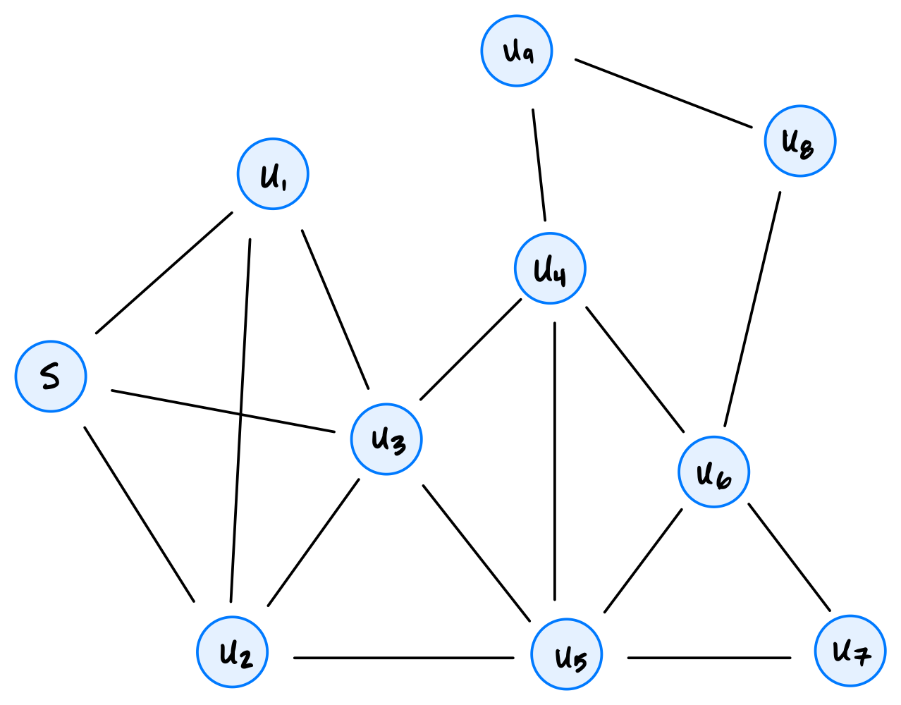
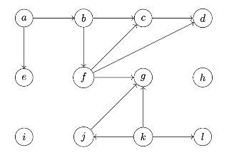
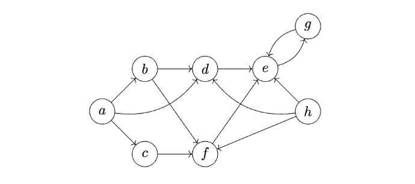
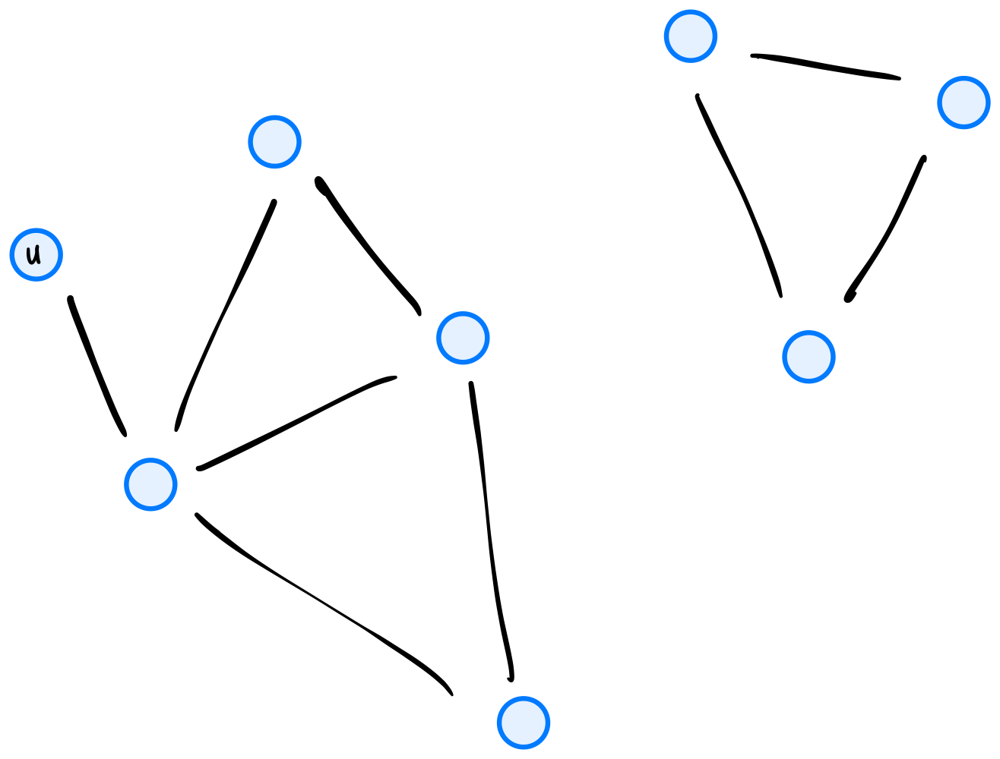
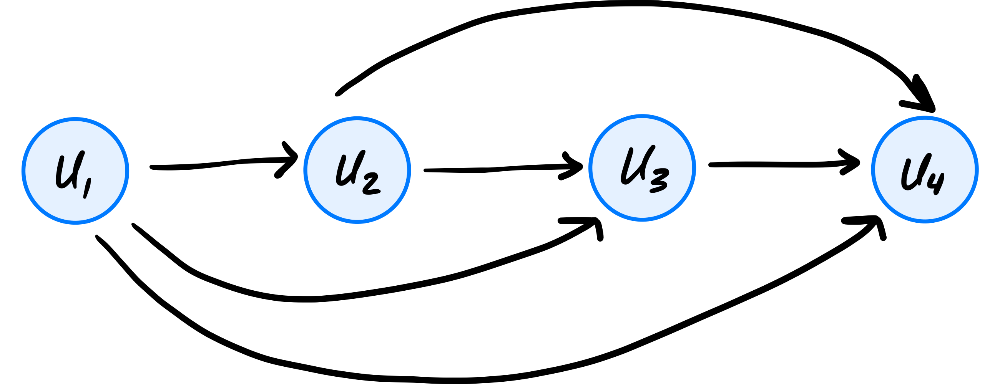

Quiz 07
Practice problems for topics on Quiz 07.
Tags in this problem set:
Problem #235
Tags: lecture-12, breadth first search
Suppose a breadth-first search is performed on the following tree, starting at the root node \(s\):

What is the most number of nodes that can be in the queue at any one time?
Solution
8
Problem #241
Tags: lecture-12, breadth first search
Consider the code below, which is a modification of the BFS algorithm presented in lecture: there are two new lines, marked with comments.
from collections import deque
def modified_bfs(graph, source):
"""Start a BFS at `source`."""
status = {node: 'undiscovered' for node in graph.nodes}
status[source] = 'pending'
pending = deque([source])
while pending:
u = pending.popleft()
for v in graph.neighbors(u):
for node in graph.nodes: # < -- this is the modification
print(status[node]) # < -- this is the modification
if status[v] == 'undiscovered':
status[v] = 'pending'
pending.append(v)
status[u] = 'visited'What is the time complexity of this algorithm, in terms of \(|V|\) and \(|E|\)? You may assume the graph is undirected and connected, so that all nodes are reachable from the source.
Solution
Because the graph is connected, \(|E| \geq |V| - 1\), and so \(\Theta(VE)\) and \(\Theta(VE + V)\) are equivalent. Only \(\Theta(VE + V)\) is an option so \(\Theta(VE + V)\) is the correct answer.
Problem #245
Tags: lecture-12, breadth first search
Suppose a breadth first search (BFS) is performed on the graph shown below using node \(a\) as the source. Which node will be the BFS predecessor of node \(h\) when the search is complete? You should use the convention that neighbors are produced in alphabetical order.

Solution
\(d\)
Problem #246
Tags: lecture-12, breadth first search
Suppose a BFS is run on the graph below using node 1 as the source node. Which node will be the BFS predecessor of node 8? You should use the convention that neighbors are produced in ascending order by label.

Solution
5
Problem #247
Tags: lecture-12, breadth first search
Suppose a BFS is run on the graph below using node 1 as the source node. Which node will be the BFS predecessor of node 9? You should use the convention that neighbors are produced in ascending order by label.

Solution
5
Problem #248
Tags: lecture-12, breadth first search
Suppose a breadth first search (BFS) is run on the graph shown below using node \(u_4\) as the source and the convention that graph.neighbors produces nodes in ascending order by label. What will be the predecessor of \(u_6\) in the BFS?

Solution
\(u_2\)
Problem #251
Tags: lecture-12, connected components, breadth first search, shortest paths
Suppose you are about to run a BFS on a graph whose exact edge structure you do not know. However, you do know that the graph is undirected, has 8 nodes, and has 2 connected components.
You have picked a node to start on and are about to run a BFS to find shortest path distances. What is the greatest shortest path distance between the starting node and any other node that could possibly be found in such a graph? Hint: consider how large a connected component could possibly be.
Solution
Answer: 6. The largest a connected component can be is 7 nodes (the other component must have at least one node). If those 7 nodes form a path and we start at one end, the node at the other end is at distance 6.
Problem #252
Tags: lecture-12, breadth first search
Suppose a breadth first search (BFS) is run on a graph \(G = (V, E)\), and that node \(u\) is distance 5 from the source while node \(v\) is distance 3 from the source. True or False: it is possible that at some point during the BFS, both \(u\) and \(v\) are in the pending queue at the same time.
Solution
False.
At any moment, the nodes in the BFS queue are all at distance \(d\) or \(d + 1\) from the source, for some \(d\). So two nodes whose distances differ by 2 can never be in the queue together.
Problem #253
Tags: lecture-12, breadth first search
Suppose a breadth first search (BFS) is run on a graph \(G = (V, E)\), and that node \(u\) is distance 6 from the source while node \(v\) is distance 7 from the source. True or False: it is possible that at some point during the BFS, both \(u\) and \(v\) are in the pending queue at the same time.
Solution
True. Suppose another node \(w\) is also at distance 6 and is a neighbor of \(v\). If \(w\) is popped from the queue before \(u\), then \(v\) is added to the queue while \(u\) is still waiting in it.
Problem #254
Tags: lecture-12, breadth first search
Suppose a breadth first search (BFS) is run on a graph \(G = (V, E)\), and that node \(u\) is the only node which is distance 6 from the source while node \(v\) is distance 7 from the source. True or False: it is possible that at some point during the BFS, both \(u\) and \(v\) are in the pending queue at the same time.
Solution
False. A node at distance 7 must be discovered while BFS is exploring the neighbors of a node at distance 6, and the only such node is \(u\). But \(u\) is removed from the queue before its neighbors are explored, so by the time \(v\) is added to the queue, \(u\) is no longer in it.
Problem #255
Tags: lecture-12, breadth first search, shortest paths
Suppose that a breadth-first search on an undirected graph \(G\) is paused and the queue is printed. Suppose that every node in the queue is either distance 5 from the source, or distance 6. At this moment, node \(u\) is undiscovered.
True or False: it is possible that node \(u\) is distance 4 from the source.
Solution
False.
BFS pops nodes in order of distance, so if every node in the queue is at distance 5 or more, every node at distance 4 has already been popped. That means it was discovered earlier, so it can't be undiscovered now.
Problem #256
Tags: lecture-12, breadth first search
Suppose a breadth first search on an undirected, connected graph is paused at a particular moment in time and the node statuses are printed. Suppose it is found that all nodes which are distance 6 from the source are marked ``visited''.
True or False: it is possible that there is a node, distance 7 from the source, whose status is ``undiscovered''.
Solution
False.
Every node at distance 7 has a neighbor at distance 6 (the node just before it on a shortest path). When that neighbor was marked visited, all of its neighbors had already been discovered, so the node at distance 7 must have been discovered too.
Problem #257
Tags: lecture-12, breadth first search
Suppose a breadth-first search (BFS) is performed in order to calculate a dictionary of shortest path distances, dist, from a source node \(s\) to all nodes reachable from \(s\) in an undirected graph \(G = (V, E)\).
Suppose node \(u\) is a node in \(G\), and \(v_1\) and \(v_2\) are two neighbors of node \(u\). Assume that \(u\) is reachable from \(s\).
Part 1)
What is the largest that \(|\)dist[v_2] - dist[v_1]\(|\) can be?
Solution
2
Part 2)
What is the smallest that \(|\)dist[v_2] - dist[v_1]\(|\) can be?
Solution
0
Problem #258
Tags: lecture-12, shortest path, graph theory
Suppose an undirected, connected graph has \(n\) nodes, half of which are colored red and the other half are colored blue. Each red node is neighbors with \(n/4\) blue nodes, and each blue node is neighbors with \(n/4\) red nodes. There are no edges between nodes of the same color.
What is the time complexity of computing a shortest path from a given red node to all other red nodes using BFS?
Solution
\(\Theta(n^2)\)
Problem #259
Tags: lecture-12, breadth first search, shortest paths
Consider the following problem: you're given an unweighted graph \(G\), a source node \(u\), a destination node \(v\), and an "intermediate" node \(x\). Your goal is to find a shortest path from \(u\) to \(v\) that passes through \(x\).
Your friend proposes the following algorithm: run a BFS starting at node \(u\), then terminate it when it reaches node \(x\). Then start a BFS at node \(x\), and terminate it when it reaches node \(v\).
Does this algorithm work?
Solution
Yes. Any path from \(u\) to \(v\) through \(x\) consists of a path from \(u\) to \(x\) followed by a path from \(x\) to \(v\), so its length is at least the \(u\)-to-\(x\) distance plus the \(x\)-to-\(v\) distance. The first BFS finds a shortest path from \(u\) to \(x\) and the second finds a shortest path from \(x\) to \(v\); joining them gives a path achieving this minimum.
Problem #260
Tags: lecture-12, shortest paths
Let \(G\) be an undirected graph, and let \(u, v,\) and \(z\) be three nodes in the graph. Consider the problem of finding a shortest path from \(u\) to \(v\) which passes through node \(z\).
True or False: a shortest path from \(u\) to \(v\) passing through \(z\) may include node \(u\) twice.
Solution
True.
Consider the "chain" graph A - B - C - D - E. The shortest path from C to E that passes through B is C - B - C - D - E. It passes through C twice.
Problem #261
Tags: lecture-12, breadth first search
The table below shows the number of nodes in a graph \(G\) which are distance 0 from node \(s\), distance 1 from node \(s\), distance 2, etc.:

Suppose a BFS is performed on this graph with node \(s\) as the starting node. What is the largest number of nodes that could possibly be in the queue at any one time?
Solution
Remember that the queue can only simultaneously contain nodes at two different distances (it can't contain nodes at distance 1, distance 2, and distance 3 at the same time, but it can contain nodes at distance 1 and distance 2 at the same time).
The largest number of nodes that could possibly be in the queue at any one time is when we have (almost) all of the nodes from the first distance, and all of the nodes from the second distance.
In this graph, let \(u\) be a neighbor of the source, and suppose it has an edge with all nodes that are distance 2 from the source. If \(u\) is the first node popped from the queue (after the source), then once its neighbors are added to the queue, the queue will contain all of the nodes at distance 1 except for \(u\)(for 6 nodes in total), and all of the nodes at distance 2 (for 3 nodes in total). This gives us a total of 9 nodes in the queue.
Problem #262
Tags: depth first search, trees, lecture-13
What is the time complexity of depth first search (DFS) when run on a tree with \(n\) nodes?
Solution
\(\Theta(n)\)
Problem #263
Tags: depth first search, aggregate analysis, lecture-13
Suppose an undirected graph \(G = (V, E)\) is a tree with 33 edges. Suppose a node \(s\) is used as the source of a depth-first search.
Including the root call of dfs on node \(s\), how many calls to dfs will be made?
Solution
34
Problem #264
Tags: depth first search, breadth first search, lecture-13
Let \(G = (V, E)\) be an undirected tree.
Suppose breadth-first search (BFS) and depth-first search (DFS) are each run on the graph using the same source node. True or False: for any node \(u\) in the graph, the BFS predecessor of \(u\) and the DFS predecessor of \(u\) must be the same.
Solution
True.
In a tree there is exactly one simple path from the source to \(u\). BFS and DFS both find a path from the source to \(u\), and it has to be this one, so both predecessors are the node right before \(u\) on it.
Problem #265
Tags: depth first search, breadth first search, lecture-13
Suppose both BFS and DFS are run on the same graph \(G = (V, E)\) using the same source node. Assume that \(G\) is a tree. Consider a particular node \(u\) in the graph. True or False: the BFS predecessor found for \(u\) and the DFS predecessor found for \(u\) must be the same.
Solution
True.
In a tree there is exactly one simple path from the source to \(u\). BFS and DFS both find a path from the source to \(u\), and it has to be this one, so both predecessors are the node right before \(u\) on it.
Problem #266
Tags: depth first search, connected components, breadth first search, lecture-13
We saw in lecture that both full BFS and DFS produce trees when run on connected graphs, and forests when run on disconnected graphs. Suppose a full BFS and a full DFS are run on an undirected graph with three connected components. True or False: the number of trees in the BFS forest will equal to number of trees in the DFS forest.
Solution
True. Both full BFS and full DFS start a new search once for each connected component (each search discovers exactly the nodes in the source's component), so each produces one tree per connected component: three trees in both forests.
Problem #267
Tags: topological sorting, lecture-13
Consider the graph \(G = (V, E)\) with \(V = \{a, b, c\}\) and \(E = \{(a, b)\}\).
How many valid topological sorts of this graph are there?
Solution
3
Problem #268
Tags: topological sorting, lecture-13
Consider the directed acyclic graph \(G = (V, E)\) with \(V = \{a, b, c, d\}\) and \(E = \{(a, b), (a,c), (a,d)\}\). How many topological sorts of this graph are there?
Solution
6
Problem #269
Tags: topological sorting, lecture-13
Let \(G = (V,E)\) be the directed graph with \(V = \{a, b, c, d, e\}\) and \(E = \{(a, b), (a, c), (a, d), (b, e), (c, e), (d, e)\}\). How many valid topological sorts of $V$ are there?
Solution
6
Problem #270
Tags: topological sorting, lecture-13
Find a topological sort of the graph shown below:

Solution
d a b c e
Problem #271
Tags: depth first search, lecture-13
Suppose a depth first search (DFS) is run on the graph shown below using node \(u_4\) as the source and the convention that graph.neighbors produces nodes in ascending order by label. What will be the predecessor of \(u_6\) in the DFS?

Solution
\(u_5\). DFS starts at \(u_4\), looks at the neighbors, and sees \(u_2\) is undiscovered, so it makes a recursive call dfs(u_2). At \(u_2\), it sees that \(u_1\) is undiscovered, and calls dfs(u_1). At \(u_1\), there's nothing to do, so it's marked as visited and the recursion unrolls back to the call on dfs(u_2). We then look at the next neighbor of \(u_2\), which is \(u_3\). We make a call to dfs(u_3), which looks at its neighbors and sees \(u_5\). We make a call to dfs(u_5), and during this call we discover \(u_6\), meaning that \(u_5\) is the DFS predecessor of \(u_6\).
Problem #272
Tags: depth first search, lecture-13, start and finish times
Suppose a depth first search is run on the graph shown below using node \(u_4\) as the source, and adopt the convention that graph.neighbors produces nodes in ascending order of label. Which node will have the smallest finish time?

Solution
\(u_1\)
Problem #273
Tags: depth first search, lecture-13, start and finish times
Suppose a depth first search is run on the graph shown below using node \(u_4\) as the source, and adopt the convention that graph.neighbors produces nodes in ascending order of label. What will be the start time of node \(u_7\)?

Solution
12
Problem #274
Tags: depth first search, lecture-13
Suppose a depth first search is run on the graph below using node \(d\) as the source, and using the convention that a node's neighbors are produced in alphabetical order.

What is the predecessor of node \(v\) in the DFS search tree?
Solution
\(r\). From \(d\), DFS first visits \(f\), then (from \(f\)) \(g\), then (from \(g\)) \(r\), and then (from \(r\)) \(v\). So \(v\) is discovered from \(r\).
Problem #275
Tags: depth first search, lecture-13, start and finish times
Suppose a depth first search is run on the graph below in order to find start and finish times using node \(d\) as the source.

Adopt the convention that the first start time is 1, and, as always, that neighbors are produced in ascending order by label. What will be the start and finish times of node \(r\)?
Solution
Start time 4, finish time 7. DFS starts \(d\) at 1, \(f\) at 2, \(g\) at 3, and \(r\) at 4. From \(r\) it starts \(v\) at 5, which finishes at 6, and then \(r\) finishes at 7.
Problem #276
Tags: depth first search, lecture-13
Suppose a DFS is run on the graph shown below using node 11 as the source.

What will be the DFS predecessor of node 3 in the search? Use the convention that a node's neighbors are produced in ascending order by label.
Solution
1
Problem #277
Tags: depth first search, lecture-13, start and finish times
Suppose a DFS is run on the graph shown below using node 11 as the source. Use the convention that a node's neighbors are produced in ascending order by label.

Part 1)
What will be the start time of node 2? Use the convention that the start time of the source is 1.
Solution
4
Part 2)
What will be the finish time of node 10?
Solution
11
Problem #278
Tags: depth first search, lecture-13
Suppose a depth first search (DFS) is run on the graph below, starting at node \(a\). Start and finish times are calculated using the convention that the start time of node \(a\) is 1.

What will be the finish time of node \(c\)? Assume the convention that a node's neighbors are produced in alphabetical order.
Solution
11
Problem #279
Tags: depth first search, lecture-13
Suppose a depth first search (DFS) is run on the graph below, starting at node \(a\). Start and finish times are calculated using the convention that the start time of node \(a\) is 1.

What will be the finish time of node \(e\)? Assume the convention that a node's neighbors are produced in alphabetical order.
Solution
13
Problem #280
Tags: depth first search, lecture-13, start and finish times
Suppose a depth-first search (DFS) is run on the graph shown below using node \(s\) as the source and adopting the convention that a node's neighbors are produced in ascending order of their label.

Part 1)
What will be the start time of node \(u_7\)?
Solution
8
Part 2)
What will be the finish time of node \(u_7\)?
Solution
9
Part 3)
Which node will be the DFS predecessor of node \(u_7\)?
Solution
\(u_6\)
Problem #281
Tags: depth first search, lecture-13
A modification of the dfs function from lecture is shown below. It is the same as the original dfs function, except that it has an added print statement.
def dfs(graph, u, status=None):
"""Start a DFS at `u`."""
# initialize status if it was not passed
if status is None:
status = {node: 'undiscovered' for node in graph.nodes}
status[u] = 'pending'
for v in graph.neighbors(u):
if status[v] == 'undiscovered':
print("Hello!")
dfs(graph, v, status)
status[u] = 'visited'Consider running this algorithm on the following graph, starting at node \(a\):

How many times will "Hello!" be printed? Note that this is not a full DFS, and that not all nodes are reachable from \(a\).
Solution
6
Problem #282
Tags: depth first search, lecture-13
A modification of the dfs function from lecture is shown below. It is the same as the original dfs function, except that it has an added print statement.
def dfs(graph, u, status=None):
"""Start a DFS at `u`."""
# initialize status if it was not passed
if status is None:
status = {node: 'undiscovered' for node in graph.nodes}
status[u] = 'pending'
for v in graph.neighbors(u):
print("Hello!")
if status[v] == 'undiscovered':
dfs(graph, v, status)
status[u] = 'visited'Consider running this algorithm on the following graph, starting at node \(a\):

How many times will "Hello!" be printed? Note that this is not a full DFS, and that not all nodes are reachable from \(a\).
Solution
10
Problem #283
Tags: depth first search, aggregate analysis, lecture-13
Consider the code shown below. It shows DFS as seen in lecture, with one modification: a print statement in the for-loop.
def dfs(graph, u, status=None):
"""Start a DFS at `u`."""
# initialize status if it was not passed
if status is None:
status = {node: 'undiscovered' for node in graph.nodes}
status[u] = 'pending'
for v in graph.neighbors(u):
print("Hello!")
if status[v] == 'undiscovered':
dfs(graph, v, status)
status[u] = 'visited'How many times will "Hello!" be printed if dfs is run on the graph below using node \(u\) as the source? Note that dfs will not be restarted if the first call does not explore the whole graph.

Solution
12
Problem #284
Tags: depth first search, lecture-13
Suppose we define a forward-looking graph with \(n\) nodes to be the directed graph \(G = (V, E)\) with nodes \(u_1, \ldots, u_n\) and the edge \((u_i, u_j)\) if and only if \(i < j\). An example of such a graph with 4 nodes is shown below.

What is the time complexity of depth-first search when run on a forward-looking graph with \(n\) nodes, using node \(u_1\) as the source? State your answer as a function of \(n\) using asymptotic notation.
Solution
\(\Theta(n^2)\)
Problem #285
Tags: depth first search, lecture-13, start and finish times
Suppose you run DFS on a graph in which all nodes are reachable from the source node. True or false: the source node will be marked as visited last, only if the graph is undirected.
Solution
False. The source is marked as visited last in both directed and undirected graphs. Every other node is reachable from the source, so each is discovered and finished during the recursive calls made by the call on the source, which finishes only after all of them have.
Problem #286
Tags: depth first search, lecture-13
Suppose a DFS is run on a directed graph. Let \(u\) and \(v\) be two nodes in the graph, and assume that the edge \((u, v)\) exists. True or False: it is possible that, at some moment in time, \(u\) is marked as ``visited'' while \(v\) is marked as ``undiscovered''.
Solution
False.
Before dfs(u) marks \(u\) as visited, it loops over all of \(u\)'s successors and calls dfs on any that are undiscovered. So by the time \(u\) is visited, \(v\) has been discovered (it is pending or visited).
Problem #287
Tags: depth first search, lecture-13
Suppose a depth first search is run on a directed graph. True or False: it is possible that, at any moment in time, there is a node marked as visited which has a neighbor (successor) that is marked as pending.
Solution
True.
Take the graph with edges \((a, b)\) and \((b, a)\) and start the DFS at \(a\). While \(a\) is pending, dfs(b) is called. It sees that \(a\) is already pending and then finishes, so \(b\) is visited while its successor \(a\) is still pending.
Problem #288
Tags: depth first search, lecture-13
Suppose that a depth first search is being performed on an undirected graph, and when dfs is called on a node \(u\), the statuses of all of its neighbors are printed. True or False: it is possible that one of the neighbors is marked as ``visited''.
Solution
False.
dfs(u) is only called when \(u\) is undiscovered. If a neighbor \(w\) were already visited, then dfs(w) would have looped over its neighbors, including \(u\), before finishing, so \(u\) would already have been discovered.
Problem #289
Tags: depth first search, lecture-13, start and finish times
Suppose a depth first search (DFS) is run on a connected undirected graph, and there is a node \(u\) which has only one neighbor. True or False: the finish time of node \(u\) will be equal to its start time plus 3.
Solution
False. If \(u\) is not the source, its only neighbor is the node it was discovered from, which is already pending. So DFS finds nothing new to visit from \(u\), and \(u\)'s finish time is its start time plus 1. (If \(u\) is the source, its finish time is its start time plus \(2(|V| - 1) + 1\), which equals its start time plus 3 only when the graph has exactly two nodes.)
Problem #290
Tags: depth first search, lecture-13, start and finish times
In a DFS on an undirected graph \(G\), the start time of node \(u\) is 12, while the finish time of node \(u\) is 37. How many nodes were marked pending between the moment that node \(u\) was marked pending and the moment that it was marked visited? Node \(u\) itself should be excluded from your count.
Solution
12
Problem #291
Tags: depth first search, lecture-13, start and finish times
Suppose \(T = (V, E)\) is a connected, undirected graph with no cycles (that is, \(T\) is a tree). Suppose a depth first search is run on \(T\) using node s as the source. Assume that node s has two neighbors: \(u\) and \(v\). If \(|V| = 15\), which one of the below represents possible start and finish times of \(u\) and \(v\)? You may assume that graph.neighbors produces neighbors in ascending order of label.
Solution
start[u] = 2, finish[u] = 21, start[v] = 22, finish[v] = 29
Problem #292
Tags: lecture-13, start and finish times
Suppose an undirected graph has 50 nodes. A full DFS is run on the graph to compute start and finish times. Suppose that, for each node, the difference between the node's start and finish is printed, and the largest difference is found to be 15.
True or False: it is possible that the graph is connected.
Solution
False.
If the graph were connected, the first call to dfs would reach all 50 nodes, so the other 49 nodes would all start and finish between the source's start and finish times. The source's finish minus start would then be at least \(2 \cdot 49 + 1 = 99\), which is much more than 15.
Problem #293
Tags: depth first search, lecture-13, start and finish times
Let \(G\) be a graph, and suppose \(s\), \(u\), and \(v\) are three nodes in the graph.
Suppose a depth-first search (DFS) is run on \(G\) using node \(s\) as the source and adopting the convention that a node's neighbors are produced in ascending order by label. During this DFS, start and finish times are computed. Suppose it is found that:
Now suppose another DFS is run using node \(s\) as the source, but adopting a different convention about the order in which neighbors are produced. Suppose new_start and new_finish are the start and finish times found by this second DFS. True or False: it must be that
Solution
False.
Take the triangle with edges \((s, u)\), \((s, v)\), \((u, v)\). If \(s\)'s neighbors are produced with \(u\) first, then \(v\) is discovered from \(u\) and its interval is nested inside \(u\)'s. If \(v\) comes first, \(u\) is discovered from \(v\) and the nesting is reversed.
Problem #294
Tags: lecture-13, start and finish times
Let \(G\) be an undirected graph, and let \(u\) and \(v\) be two nodes in the graph, with \(v\) reachable from \(u\).
Suppose that at the moment dfs(u) is called, \(v\) is still undiscovered. True or False: the eventual start time of \(v\) must be less than the finish time of \(u\).
Solution
False.
The only path from \(u\) to \(v\) might go through a node that is already pending. For example, take edges \((s, u)\) and \((s, v)\) and start at \(s\). If dfs(u) is called first, \(u\) has no undiscovered neighbors and finishes right away, and \(v\) is only started afterward from \(s\).
Problem #295
Tags: depth first search, lecture-13, start and finish times
Suppose \(v\) is reachable from node \(u\) in a directed graph. A DFS is run on the graph, and node \(u\) is discovered before node \(v\) (its start time is less than \(v\)'s start time). True or false: the finish time of node \(v\) must be less than the finish time of node \(u\).
Solution
False. Consider the graph with nodes s, u, and v, and edges (s,u), (u,s), and (s,v), where a DFS is run with node \(s\) as source, going to node u first. u will be finished before v is started (and thus before it is finished, too).
Problem #296
Tags: depth first search, lecture-13
True or False: a depth first search with source node \(s\) is guaranteed to find the longest simple path starting from \(s\) in a connected, undirected graph \(G\) That is, suppose that there is a unique longest simple path in \(G\), and call this path \(p\). True or False: the longest simple path in the DFS forest must be also be \(p\).
Solution
False.
Take edges \((s, a)\), \((s, b)\), \((s, c)\), \((a, b)\), \((a, d)\). The unique longest simple path is \(c, s, b, a, d\)(4 edges). If the DFS from \(s\) visits \(a\) first, then \(b\) and \(d\) are both discovered from \(a\), the edge \((s, b)\) is not in the DFS tree, and the longest path in the tree has only 3 edges.
Problem #297
Tags: topological sorting, lecture-13
Suppose \(G\) is an acyclic directed graph. Let \(a\) and \(b\) be two nodes of \(G\) such that \(a\) appears before \(b\) in every possible topological sort of \(G\).
True or False: there must be a path from \(a\) to \(b\).
Solution
True.
Suppose there were no path from \(a\) to \(b\). Then \(a\) is not among the nodes that have a path to \(b\). We could list \(b\) and all the nodes with a path to \(b\) first (in topological order), followed by the rest. This is a valid topological sort with \(b\) before \(a\).